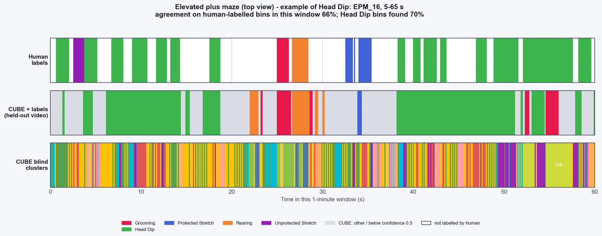

How it works#
An HMM is fitted to the classifier output, estimating how likely each behaviour is to persist and to switch to each other behaviour (the transition matrix). Viterbi decoding then finds the single most probable label sequence.

By default CUBE uses the version that works with the classifier's probabilities instead of hard labels, so an uncertain bin is smoothed with less confidence than a certain one. It works at 100 ms bin resolution, and each cluster gets its own persistence prior derived from its mean bout duration, so naturally brief behaviours are not over-smoothed. These are the defaults (hmm_emission_mode soft, hmm_smoothing_level bin, hmm_transition_prior per_cluster). Setting them to categorical, frame and global restores the earlier hard-label, frame-level behaviour with one flat persistence prior.
Two sets of outputs#
Every output is written in a raw version and an HMM-smoothed version (*_frame_labels.csv and *_frame_labels_hmm.csv, *_bout_lengths.csv and *_bout_lengths_hmm.csv). The Analyser uses the HMM files by default; rename or delete them to use the raw labels.
Two transition matrices#
transition_matrix.pngis empirical: it counts every consecutive pair of frames in the raw classifier output, with the diagonal masked.hmm_transition_matrix.pngshows the matrix the HMM learned, in two panels: the matrix itself and a version with the diagonal removed and the rows renormalised, which shows the switching pattern independently of self-persistence.